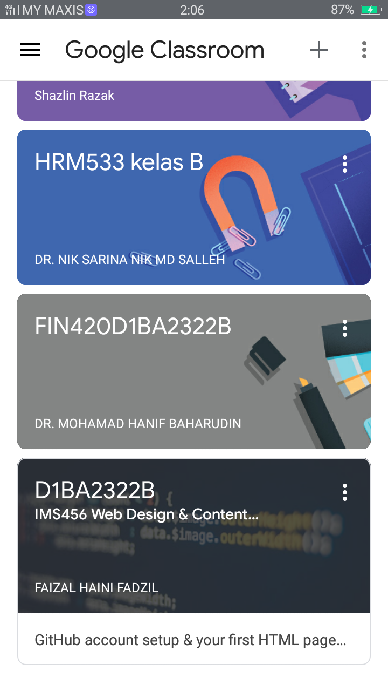

Movement Control Order (MCO) in Malaysia have been
implemented on March 18, 2020 until today. There are
three phases for MCO to control the outbreak of covid-19
disease. For the first phase was started from 18 to
March 31, 2020 and followed by the second phase from 1
to April 14, 2020 while the third phase runs from 15 to
April 28, 2020 and it tooks for 2 weeks by each phase.
During this MCO, I've gained a lot of experience such as:
I learned to control movement boundaries.
I have to take a distance myself for one meter from
the crowd.
I always wash my hands in the right way by using
water and soap or hand sanitizer.
I must to wearing a masks and gloves when going out
from the house.
I learned that only family heads allowed to go out
to buy daily necessities from 8am until 8pm.
I always to take good care of my health to avoid
from be exposed to this outbreak
At the time of the MCO, I was already at the family
residential. To prevent this covid-19 outbreak, I took
steps to stay at home and spend time with my family. I
am so grateful that I was able to spend time with them
by doing various activities to fulfilled my leisure time
before the online classes begin. There are several
activities that I did during MCO with my family
which is:
Make an exercise at home in the morning together.
Helping each others by cleaning the house and doing
other activities
Learned to cooking the various food with my mother.
Learned and try to making an ice cream with my
sister.
This is image of ice cream.
Starting this week, Sunday through Thursday, Online
Distance Learning (ODL) is started. So I have to pay
attention to my classes and online lessons. In Online
Distance Learning, I use several mediums to communicate
with my lectures and classmates. This is what I am doing
for my studies and the medium that I used is:
I make and submit an assignment.
I make a video of presentation.
I do an exercises for test and quizzes.
I takes a time to read a textbook.
I use a google classroom, google meet, whatsapp,
telegram and more for online classes.
This is image of Google Classroom

So throughout this MCO period there was a lot of experience
that I gained and learned about this case. I would like to
thank the frontliners team for working hard to resolve the
outbreak. We must follow and obey the instructions of the
Ministry of Health (MOH) and prime minister. Take note of what
has happened and there is definitely wisdom behind it.